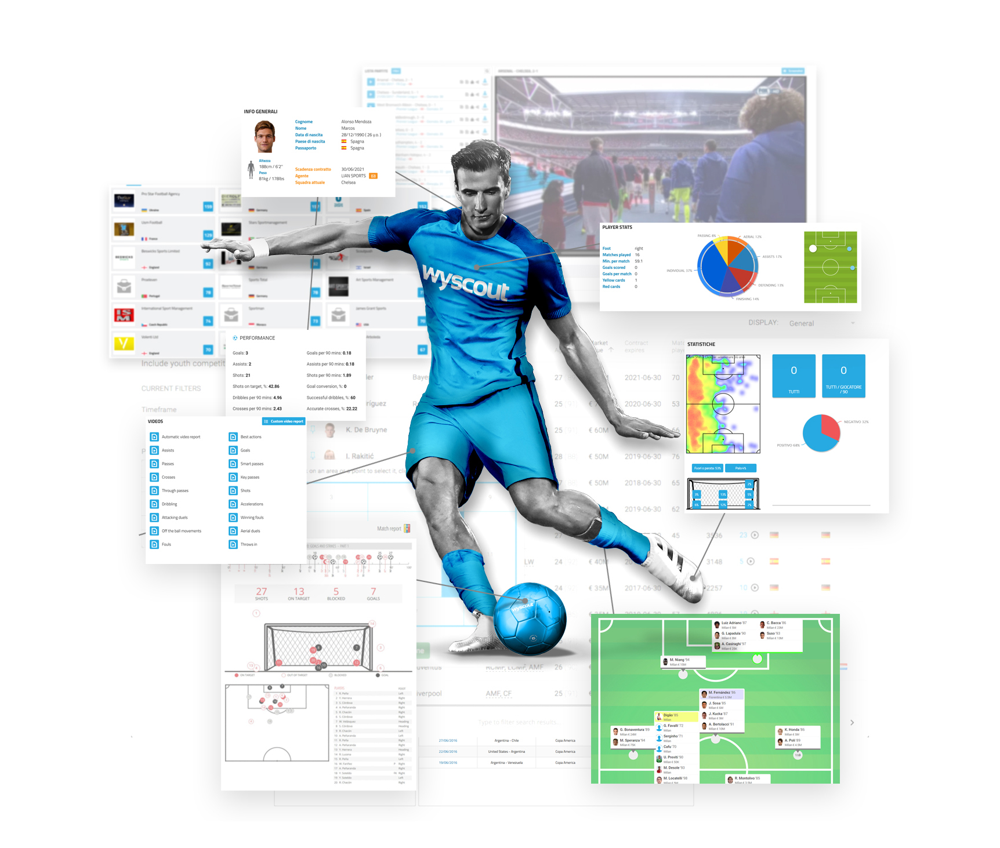

The level that analytics have reached in football (soccer) are absolutely incredible.
After reading a few articles on the matter and looking at some game analytics myself, I was amazed at the detail and precision that programs and softwares are able to make analytical data with.
With modern software from different companies, anyone is able to pinpoint a player in a match and look at the exact number of passes they've made, distance they've ran, a heat map of where they are most active on the field - the list goes on.
The analytical market of football is dominated by a company called Driblab, a company founded in Madrid, Spain in 2017.
Overall, for the millions of supporters who want to know everything about their favourite players, this advancement in analytics is great for football.

Predictions and Bookmaking
On the other side of analytical programs in the football world is sports betting.
Betting may not be the first thing that comes to mind when thinking of sports analytics, but it's certainly a large industry that is heavily impacted by it.
The fact that betting sites and apps make a continuous profit is proof that their programs and analytical data DO work.
Most betting sites have their own algorithms, or borrowed ones, that decide odds of match results, teams scoring, players performing well/poorly, and many more specific statistics. Somehow, these sites are able to come up with numbers so precise based on previous results, that they almost always come out profitable but only to a small enough margin where some betters still win big.
The sports betting world is getting more advanced weekly, and betting sites are getting more successful!